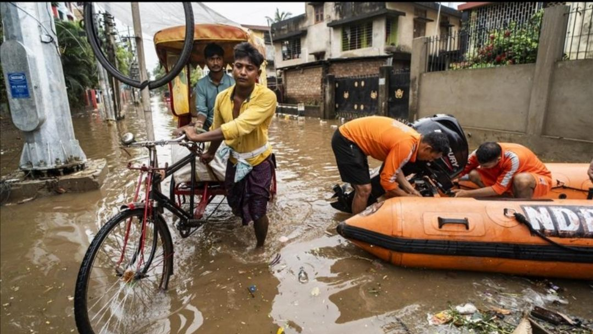
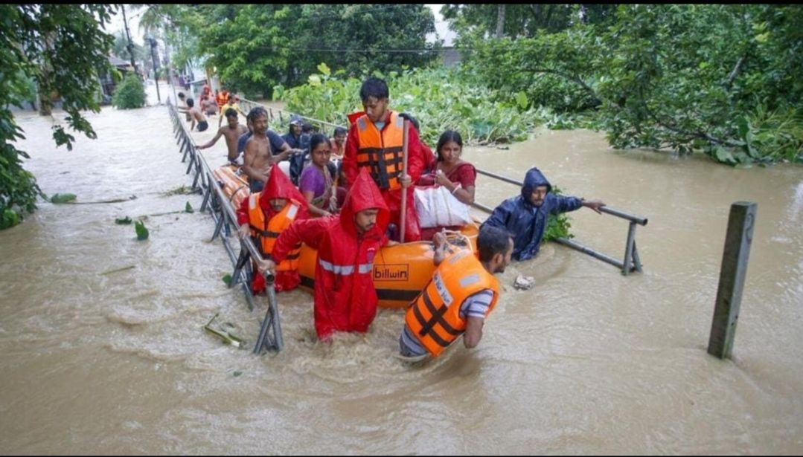

Pre-Flood Baseline Image
Satellite observation prior to flooding

Post-Flood Peak Inundation
Latest active flood satellite image

Compare multi-temporal satellite observations to detect water spread expansion, inundation depth, damaged infrastructure, and emergency rescue priority zones.
Satellite observation prior to flooding

Latest active flood satellite image
